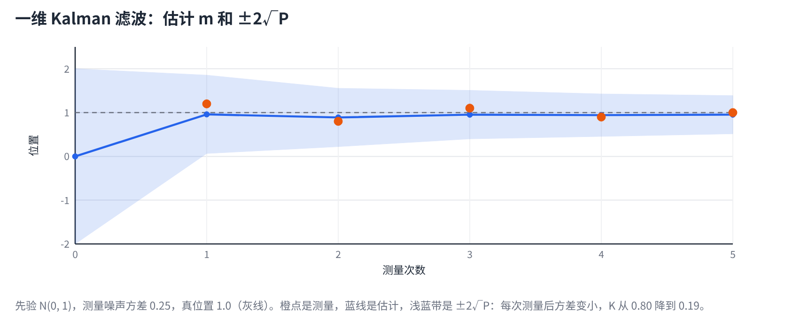
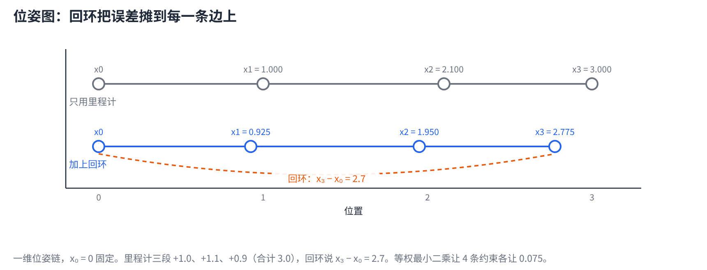
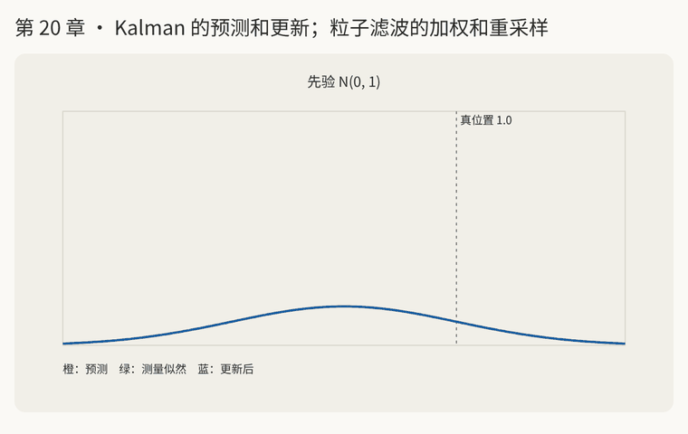

第 20 章 · 状态估计：预测一步、用测量修正一步
本地运行
git clone https://github.com/wikieden/math-and-eval-stats
cd math-and-eval-stats/code/notebooks
pip install jupyterlab torch numpy
jupyter lab ch20_state_estimation.ipynb也可以下载后直接用 VS Code 打开 .ipynb 运行。需要 GPU 的章节在 Colab 里选「代码执行程序 → 更改运行时类型 → GPU」。
本章回答：机器人怎么把"自己估计的运动"和"传感器的测量"合起来，算出自己在哪？Kalman 增益在权衡什么？测量是非线性的怎么办？粒子滤波、因子图又在什么时候用？
讲解日期：2026-11-25 · 上一章：第 19 章 李群入门 · 下一章：第 21 章 动力系统与控制的数学
对应原文：Särkkä《Bayesian Filtering and Smoothing》materials/text/books/sarkka-bayesian-filtering-smoothing-2e.txt§6.2–6.3 贝叶斯滤波方程与 Kalman 滤波 L5768–L5932、第 7 章 EKF、§11.2 重要性采样 L12852 起；Solà ESKFmaterials/text/papers/quaternion-kinematics-eskf-1711.02508.txt后半；Solà micro Lie theory §V（L1052 起，在流形上做估计）
本章缩写：KF = Kalman Filter（卡尔曼 / 滤波）；EKF = Extended Kalman Filter（扩展卡尔曼滤波：把非线性函数在当前估计处线性化）；ESKF = Error-State Kalman Filter（误差状态卡尔曼滤波）；UKF = Unscented Kalman Filter（无迹卡尔曼滤波：用几个精心挑选的点代替线性化）；m、P = 均值、方差（协方差）；Q、R = 过程噪声、测量噪声的方差；K = Kalman 增益；H = 测量函数的雅可比；ESS = Effective Sample Size（有效样本数）。全部缩写见 附录 · 缩写与术语表
讲解
第一步：贝叶斯滤波：预测 + 更新两步（2026-11-25）
类比：蒙眼走路，数着步子估计自己走到哪（预测），偶尔摸到墙确认一下（更新）。 数步子会越来越不准，摸墙能把误差拉回来。
（Särkkä §6.2）预测把不确定性往外扩，更新用贝叶斯公式（第 8 章）把它收回来。线性高斯时，两步都有闭式：就是 Kalman 滤波。
一句话：滤波 = 预测（按运动模型往前推，不确定性变大）+ 更新（按测量用贝叶斯修正，不确定性变小）。
第二步：Kalman 滤波：一个数字例子（2026-11-25）
类比：两个人报你的位置，一个说得准、一个说得糙，你取一个加权平均，权重按各自的可信度给。
一维，位置不动（Q = 0），测量噪声方差 R = 0.25：
K 就是"信测量多少"：先验方差大、测量准，K 接近 1；先验已经很准，K 接近 0。
例子（先验 N(0, 1)，测量 1.2、0.8、1.1、0.9、1.0，真位置 1.0）：
| 第几次 | z | K | 估计 m | 方差 P |
|---|---|---|---|---|
| 1 | 1.2 | 0.800 | 0.9600 | 0.2000 |
| 2 | 0.8 | 0.444 | 0.8889 | 0.1111 |
| 3 | 1.1 | 0.308 | 0.9538 | 0.0769 |
| 4 | 0.9 | 0.235 | 0.9412 | 0.0588 |
| 5 | 1.0 | 0.190 | 0.9524 | 0.0476 |
5 次测量的平均是 1.0；Kalman 给出 0.952，因为先验 N(0, 1) 也算一份证据，把估计往 0 拉了一点。方差从 1 降到 0.048。
过程噪声 Q：Q = 0 时 K 一路变小（第 n 次 K = 4/(4n + 1)），越来越相信旧估计；真实系统里状态会变，Q > 0 让 K 收敛到一个稳态：Q = 0.01 → 0.181，Q = 0.1 → 0.463。

图 20-1 · 橙点是测量，蓝线是估计 m，阴影是 ±2√P；方差每次测量后变小一句话：Kalman 增益 K = P⁻/(P⁻ + R) 是"信测量的比例"；估计 = 预测 + K × 新息；Q 决定 K 的稳态。
第三步：EKF：测量是非线性的，就在当前估计处线性化（2026-11-25）
类比：用一小段直尺贴着曲线量长度。
测量 z = h(x) + 噪声，h 非线性（测距、相机投影）。EKF 在当前估计 m 处求 h 的雅可比 H，把 Kalman 公式里的"H"换成它（Särkkä 第 7 章）：
例子：测量 h(x) = √(x² + 1)（到一个离线 1 米的信标的距离），先验 m = 1.0、P = 0.5，R = 0.01，测到 z = 1.6：
| 算什么 | 结果 |
|---|---|
| h(m) = √2 | 1.4142 |
| H = m/√(m² + 1) | 0.7071 |
| 更新后 m | 1.2526 |
| 更新后 P | 0.0192 |
ESKF：机器人姿态在 SO(3) 上，不能直接加（第 19 章）。ESKF 把"误差"δ 当成状态（在切空间里，是普通向量），用 KF 估计 δ，再用 R ⊕ δ 注入回名义状态。VIO、无人机的姿态估计大多是这么做的（Solà ESKF 后半）。
UKF 一句话：不线性化，而是挑 2n + 1 个点（sigma 点）推过非线性函数，再用它们的均值、方差近似；非线性强时比 EKF 准，代价是多算几次 h。
一句话：EKF 在当前估计处用雅可比 H 线性化测量；ESKF 在切空间里估误差再 ⊕ 回去；UKF 用 sigma 点代替线性化。
第四步：粒子滤波：用一群样本表示分布（2026-11-25）
类比：派 1000 个人分头猜你在哪，每来一次测量，猜得离谱的人被淘汰，猜得好的人分身。
分布不是高斯（多峰：比如"可能在走廊的两头之一"）时，用 N 个带权重的粒子表示它：
- 每个粒子按运动模型往前走一步；
- 按测量的似然给权重 \(w_i \propto p(z\mid x_i)\)（第 16 章的重要性采样，Särkkä §11.2）；
- 有效样本数 \(\text{ESS} = 1/\sum w_i^2\) 太小时，按权重重采样。
例子（先验 N(0, 1)，测量 z = 1.0，R = 0.25，1000 个粒子）：加权均值 0.792（精确后验均值 0.8），有效样本数 403 / 1000，重采样后均值 0.780。
一句话：粒子滤波 = 一群样本 + 似然权重 + 重采样；能表示多峰，代价是要很多粒子。
第五步：因子图：把所有测量一起拿来，解一个最小二乘（2026-11-25）
类比：拼一张地图，不是边走边改，而是把所有观测摊在桌上，一起找最一致的拼法。
滤波只用"到现在为止"的数据、一步一步往前推；SLAM 和离线标定常常把所有位姿和所有测量一起放进一个优化：每个测量是一个"因子"（约束），在高斯噪声下最大后验 = 加权非线性最小二乘（第 12、14 章，用高斯-牛顿 / LM 解）。
例子（一维位姿链 x₀ = 0 固定，里程计说每步 +1.0、+1.1、+0.9，回环检测说 x₃ − x₀ = 2.7）：
| x₁ | x₂ | x₃ | |
|---|---|---|---|
| 只用里程计 | 1.000 | 2.100 | 3.000 |
| 加上回环（等权最小二乘） | 0.925 | 1.950 | 2.775 |
4 条约束互相矛盾（里程计加起来 3.0，回环说 2.7），最小二乘让每条各让 0.075：里程计每步少走一点，回环也松一点。

图 20-2 · 上：只用里程计的位姿；下：加了回环以后，每个位姿都往回挪了一点场景代码：GTSAM（真实库的写法；本书环境没装 gtsam，没跑过）：
import gtsam
graph = gtsam.NonlinearFactorGraph()
noise = gtsam.noiseModel.Isotropic.Sigma(1, 0.1)
graph.add(gtsam.PriorFactorDouble(0, 0.0, noise)) # x0 = 0
for i, d in enumerate([1.0, 1.1, 0.9]):
graph.add(gtsam.BetweenFactorDouble(i, i + 1, d, noise)) # 里程计因子
graph.add(gtsam.BetweenFactorDouble(0, 3, 2.7, noise)) # 回环因子
一句话：因子图把所有测量当约束，最大后验 = 非线性最小二乘；回环让累积误差摊回每一步。
动画演示：Kalman 滤波的预测和更新

可交互版：animations/20-state-estimation.html（滑块调测量噪声 R 和过程噪声 Q；下拉切换"Kalman / 粒子滤波"）。
怎么看：
- Kalman：每一帧先"预测"（钟形变宽），再"更新"（和测量的钟形相乘，变窄、往测量挪）（第二步）；
- R 调大（测量不准）：每次更新挪得少；Q 调大：预测时变宽得多，更依赖测量；
- 粒子滤波：粒子点的大小是权重，重采样以后点集中到测量附近（第四步）。
练习与作答记录
题 1（第二步）：先验 m = 2、P = 4，测量 z = 3、R = 1。算 K、更新后的 m 和 P。
作答：（待作答）
题 2（第三步）：测量 h(x) = x²，先验 m = 2、P = 0.1、R = 0.01，测到 z = 4.4。算 H 和更新后的 m。
作答：（待作答）
题 3（第四、五步）：（a）粒子权重是 [0.7, 0.1, 0.1, 0.1]，有效样本数是多少？（b）一维位姿链只有里程计、没有任何回环或绝对测量，因子图的解会和直接累加里程计不同吗？
作答：（待作答）
口诀
数步子预测、摸墙更新，不确定一扩一收；
K 是信测量的比例，先验越糙、测量越准，K 越大；
非线性就在当前点拉直线，姿态误差在切空间里估；
多峰用粒子，全局用因子图，回环把误差摊回每一步。
本章复习卡片
ST72（贝叶斯滤波的预测、更新两步）、ST73（Kalman 增益与更新公式）、ST74（EKF / ESKF / UKF 各做什么）、ST75（粒子滤波与因子图各适合什么）。练习做完后，按答错、卡住的地方补上。
附录 · 延伸阅读
留给以后深入学习用，不影响本章主线。★ 是建议先读的。
推荐阅读
| 读什么 | 读哪里 | 读它为了什么 |
|---|---|---|
| ★ Särkkä | §6.2–6.3 L5768–L5932 | 贝叶斯滤波方程、Kalman 滤波的推导 |
| ★ Särkkä | 第 7 章（EKF）、第 11 章（粒子滤波） | 非线性滤波两条路 |
| ★ Solà《Quaternion kinematics for the ESKF》 | 后半 | ESKF 的完整推导，IMU 积分 |
| Solà micro Lie theory | §V L1052 起 | 在流形上做滤波和优化 |
| Barfoot | 批量估计一章 | 因子图 / 批量最小二乘的系统讲法 |
数学原理
- Kalman 更新就是高斯相乘：先验 N(m⁻, P⁻) 乘似然 N(z; x, R)，结果还是高斯，均值 \((Rm^- + P^-z)/(P^- + R)\)，即 \(m^- + K(z - m^-)\)（第 9 章高斯乘积）。
- Kalman 是线性高斯下的最优估计：均方误差最小，也是最大后验。
- 有效样本数：权重全相等时 ESS = N，全集中在一个粒子时 ESS = 1；常用 ESS < N/2 触发重采样。
- 因子图 = 最大后验：\(\max\prod_i\exp(-\frac12\|r_i\|^2_{\Sigma_i})\) ⇔ \(\min\sum_i\|r_i\|^2_{\Sigma_i}\)；用高斯-牛顿 / LM 解，Hessian 稀疏（第 55 章）。
公式清单
| 公式 | 意思 |
|---|---|
| \(m^- = Fm\)，\(P^- = FPF^\top + Q\) | KF 预测 |
| \(K = P^-H^\top(HP^-H^\top + R)^{-1}\) | Kalman 增益 |
| \(m = m^- + K(z - Hm^-)\)，\(P = (I - KH)P^-\) | KF 更新 |
| \(w_i \propto p(z\mid x_i)\)，\(\text{ESS} = 1/\sum w_i^2\) | 粒子滤波 |
| \(\min\sum\|r_i\|^2_{\Sigma_i}\) | 因子图 |
代码对照：把本章的数字用代码算一遍
代码在仓库本地
math-and-eval-stats/solutions/chapter-code/ch20_state_estimation.py，配套测试tests/test_ch20.py：
bash cd math-and-eval-stats/solutions/chapter-code uv run python ch20_state_estimation.py uv run pytest tests/test_ch20.py
讲义 ↔ 代码：
| 讲义 | 公式 | 写法 | 跑出来 |
|---|---|---|---|
| 第二步 KF | 预测 + 更新 | run_kf() |
K = 0.8, 0.444, …；m = 0.9524 |
| 第二步 稳态 | Q > 0 | steady_gain(0.01) |
0.181 |
| 第三步 EKF | 线性化 | ekf_update(1.0, 0.5, 1.6) |
H = 0.7071，m = 1.2526 |
| 第四步 粒子 | 加权 + 重采样 | particle_filter(1.0) |
0.792，ESS 403 |
| 第五步 因子图 | 最小二乘 | pose_graph() |
[0.925, 1.95, 2.775] |
关键几行：
pp = p + q # 预测：方差加过程噪声
k = pp / (pp + r) # Kalman 增益
m = m + k * (z - m); p = (1 - k) * pp
w = np.exp(-0.5 * (z - x) ** 2 / r); w /= w.sum() # 粒子权重
xr = x[rng.choice(n, n, p=w)] # 按权重重采样
代码里才看得到的 3 件事：
- 一维时矩阵都退化成数：F = 1、H = 1，公式里的转置和求逆都消失了；多维时照样套矩阵公式。
- P = (1 − KH)P⁻ 在数值上可能失去对称、正定：工程上常用 Joseph 形式 \((I - KH)P(I - KH)^\top + KRK^\top\)，这里一维没有这个问题。
- 重采样用
rng.choice(n, n, p=w)：最简单的多项式重采样；实际系统常用系统重采样（systematic resampling），方差更小。
自己改一改（不影响练习答案）：
- 把先验从 N(0, 1) 改成 N(0, 100)（几乎没有先验），5 次测量后的估计是多少？和测量平均比？
- 把粒子数从 1000 改成 50，重复几次，加权均值抖动多大？